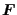

Next: Ten-node tetrahedral element (C3D10)
Up: Element Types
Previous: C3D20R
Contents
The C3D4 is a general purpose tetrahedral element (1 integration point). The shape functions can be found in [84]. The node numbering follows the convention of Figure 66.
Figure 66:
4-node tetrahedral element
|  |
This element is included for completeness, however, it is not suited
for structural calculations unless a lot of them are used (the element
is too stiff). Please use
the 10-node tetrahedral element instead.
The F3D4 element is the corresponding fluid element.
guido dhondt
2018-12-15